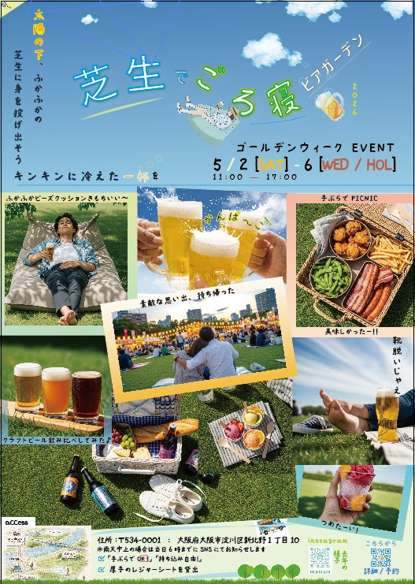
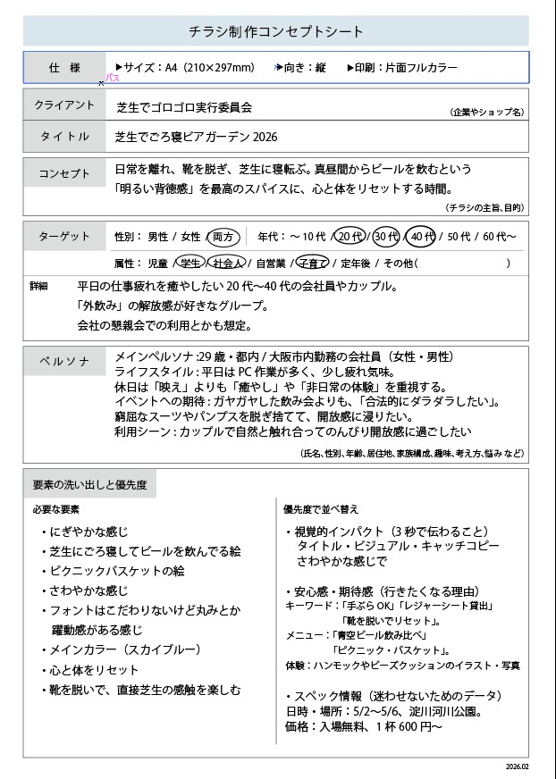
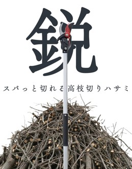
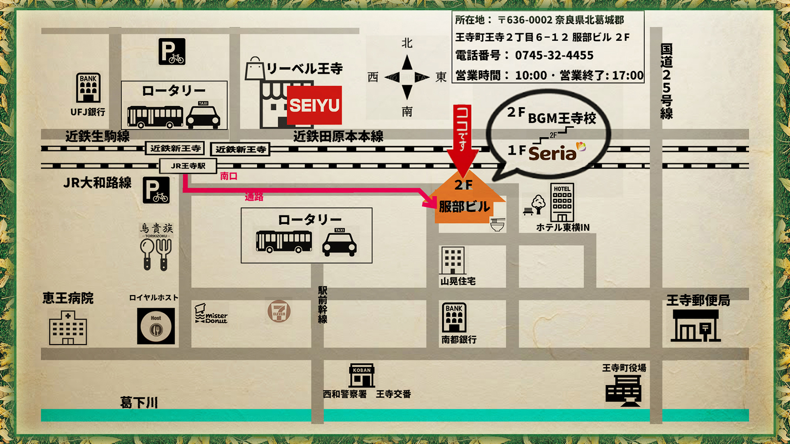
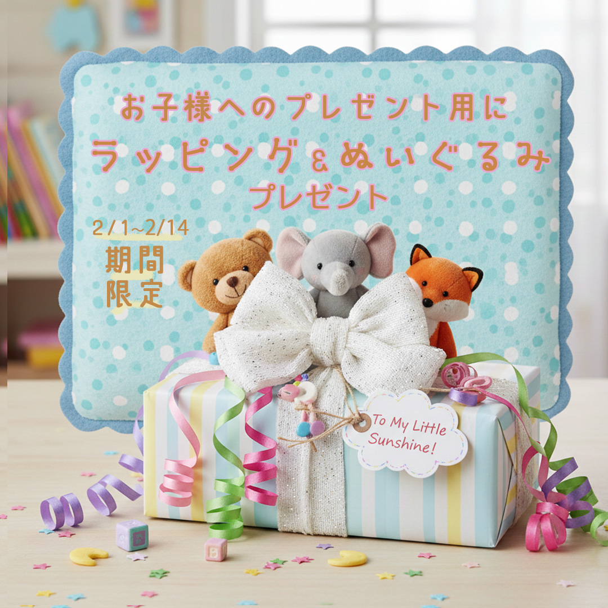
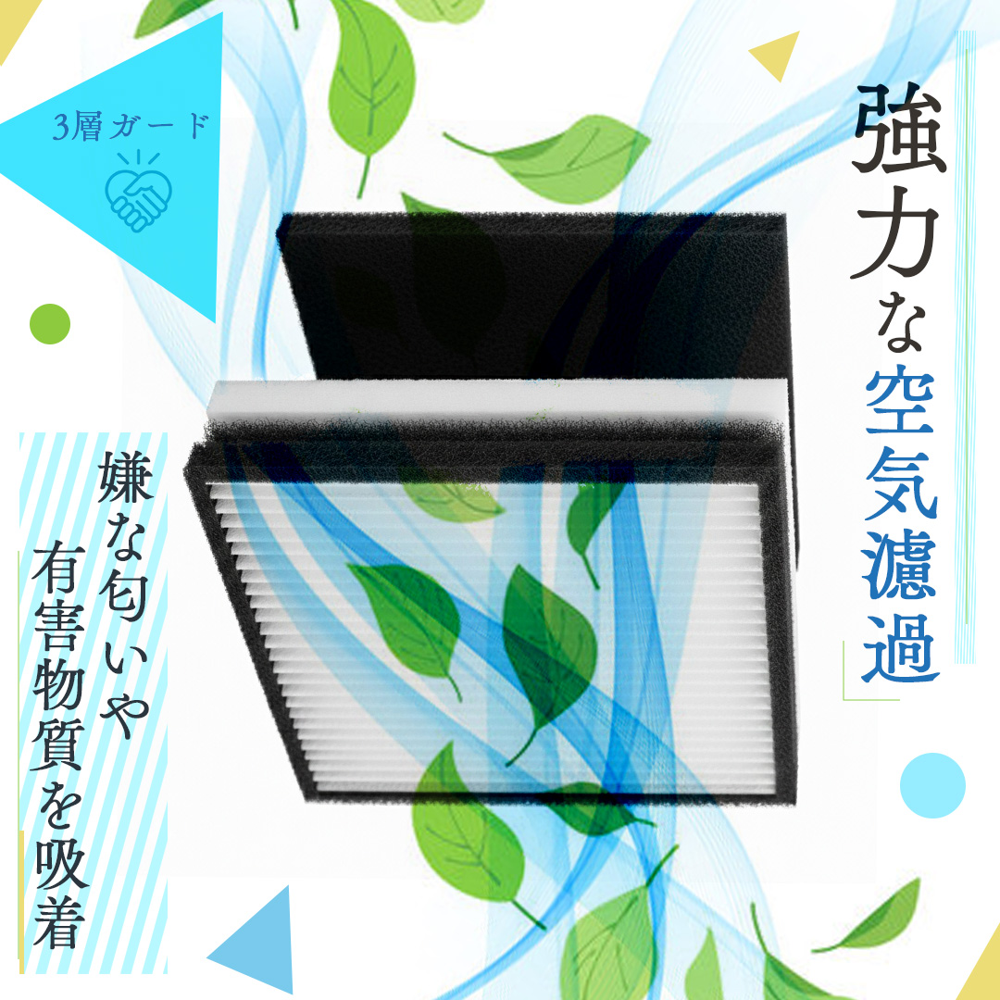
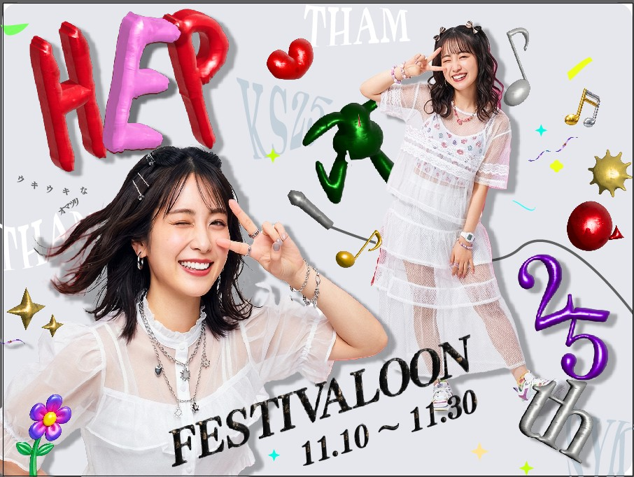
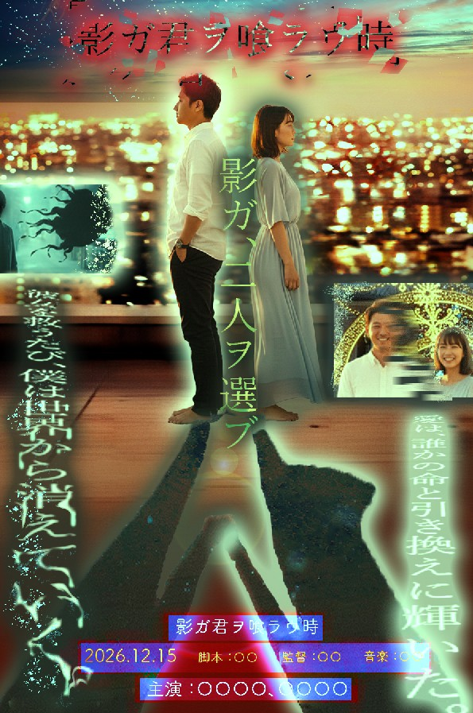

Training Project Archive
職業訓練のカリキュラム内で制作したデザイン・課題作品の一覧です。
※画像タップで拡大


芝生でごろ寝ビアガーデン2026
Tool: Illustrator / Photoshop
ヒアリングシートに基づき、ターゲットが「仕事帰りにリラックスできる」開放的な配色とレイアウトを意識して制作しました。フォントは手書き風を使用し、写真を配置してセリフ風の文字を散りばめました。
※画像タップで拡大

高枝切りハサミ楽天ショップバナー
Tool: Illustrator / Photoshop
よく切れるというコンセプトで、上部に余白を大きく取り切れ味を表現しました。下には切った後の枝を積んで、沢山切った後だという印象を画像で表現しました。
※画像タップで拡大

制作課題の訓練校までの地図
Tool: Photoshop
目的は「迷わずたどり着く事」なので、目印となる建物は潰れる可能性が低い公共の建物をメインに配置。余計な色は使わずシンプルな配色を重視し、赤い矢印で経路を明示しました。
※画像タップで拡大

楽天商品購入時のラッピングプレゼントバナー
Tool: Photoshop
プラネタリウムを購入いただいたお客様へのラッピングプレゼントのバナーを作成しました。 北欧ニュアンスカラーで可愛い雰囲気を演出しました。
※画像タップで拡大

Instagramでの塗装ブース販売フィードバナーを作成しました
Tool: Photoshop
文字をでかでかと全面をおおうくらいの配置でインパクト重視のデザインにしました。 有害物質をすごい力で吸引している様子を風のエフェクトで表現しました。
※画像タップで拡大

楽天の塗装ブース商品販売ページのバナー
Tool: Photoshop
楽天の塗装ブース商品ページのバナーを作成しました。 良く吸引して空気を濾過してくれる様子を爽やかな印象の緑と青色メインの色合いで表現しました。 古臭くならないように、スライプの座布団を文字の背景に配置したり、三角や丸の図形をちりばめて弾むような雰囲気を出しました。
※画像タップで拡大

既存デザインのトレース・模写
Tool: Illustrator
【引用元】
大阪・梅田「HEP FIVE」開業25周年記念イベント
「HEP FIVE FESTIVALOON」告知ポスター
【学習目的】
・Illustratorの3D機能を用いた立体的な文字表現の習得
・ポップな配色パターンの分析
※画像タップで拡大

架空映画ポスター「影が君を喰らう時」
Tool: Photoshop
【概要】
職業訓練での第一作目。ダークファンタジー映画を想定し、人物と背景、そして「意志を持つ影」の合成に挑戦しました。
【こだわり】
レイヤーマスクによる複雑な切り抜きと、光の加減を調整して不穏な空気感を作る技術を習得した、自身のデザインの原点となる作品です。
ロゴ制作演習
Tool: Illustrator